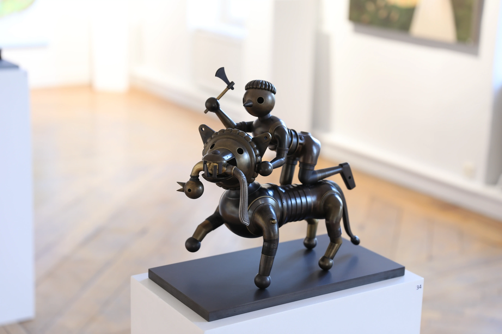
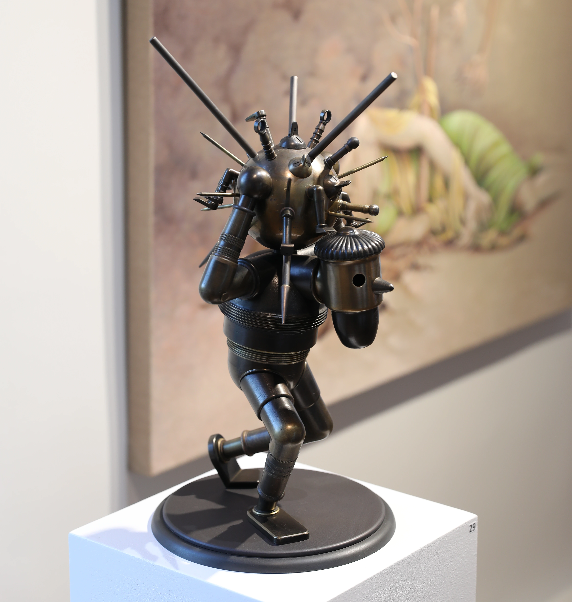
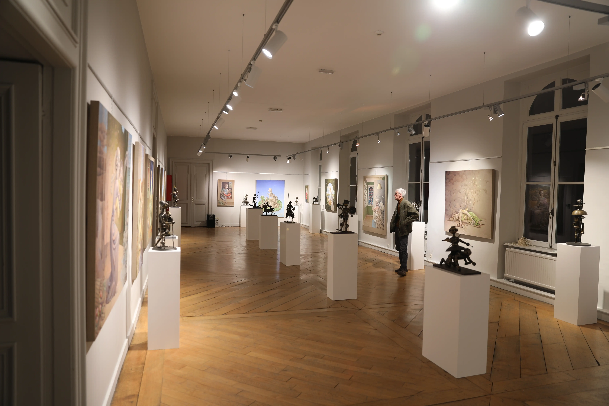

La sculpture comme moyen d'expression
Né en Mars 1958, Michel Dusollier est un sculpteur Mouscronnois autodidacte. Son parcours artistique est inspiré par des éléments inattendus : "Mes premières pièces étaient fabriquées à partir d'os d'animaux". Sa première grande réalisation, un jeu d'échecs grand format, marque cependant le prélude à la floraison de son art : "Un jour, dans un atelier mécanique de l'école technique où j'ai enseigné, j'ai vu un tas de pièces, et cela m'a donné l'idée"
On peut apercevoir, au fil du temps une évolution remarquable dans sa technique, ainsi qu'une affirmation d'un genre qui lui est propre. Les sujets choisis ne sont pas anodins; bien qu'ils puissent sembler innocents à première vue, ils reflètent une myriade d'aspects de la réalité. Cette dualité entre l'apparente simplicité des thèmes et la profondeur de leur signification illustre une maîtrise subtile de l'art de la sculpture.
Le XXeme siècle aura été celui de toutes les audaces, de toutes les remises en question, en un mot, celui de l'importance donnée à la modernité. C'est grâce à cela qu'aujourd'hui une oeuvre peut se développer à partir de moyens jadis inconcevables. L'art de l'assemblage est un de ceux-ci. Déjà les cubistes avaient réalisé l'intégration d'un élément de la réalité dans une oeuvre plastique donnant un sens nouveau et à l'oeuvre et à l'élément lui même détournant ainsi l'objet de sa fonction première pour le rendre porteur d'un message esthétique, voire poétique.
Chaque œuvre est une exploration minutieuse des complexités humaines et sociales, transcendées à travers des formes sculpturales. L'artiste parvient à capturer des émotions et des idées abstraites, les matérialisant dans une dimension tangible et palpable. Ainsi, ces sculptures deviennent des miroirs de notre propre condition, nous invitant à une contemplation profonde et introspective.
Pierre Vancraeynest
L'évolution de sa technique n'est pas simplement un progrès technique, mais une véritable maturation artistique. Chaque nouvelle création témoigne d'une réflexion approfondie, d'une recherche constante de nouvelles voies d'expression. L'artiste ne se contente pas de reproduire la réalité; il la réinvente, la transcende, et la propose sous un angle inédit qui pousse le spectateur à revisiter ses propres perceptions.
De plus, ces œuvres sont toujours libres d'interprétation, offrant une richesse de lectures potentielles. L'artiste laisse volontairement des espaces vides, des zones d'ombre qui sollicitent l'imagination et la subjectivité de chaque spectateur. Ce choix délibéré d'ouvrir le champ des possibles rend chaque interaction avec l'œuvre unique, car elle se renouvelle et s'enrichit à travers les regards variés de son public. En laissant cette liberté interprétative, l'artiste engage un dialogue continu avec le monde, où chaque sculpture devient un point de départ pour une multitude de réflexions personnelles et collectives.
Futures expositions
Centre Marius Staquet à Mouscron
Précédentes expositions
/